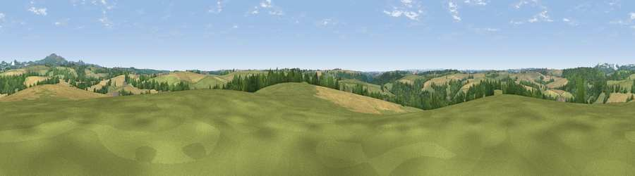

Viewpoint near Grampound
#28460 in England · top 50% of its area beats it · near GrampoundWhere it is
The exact computed spot (SW 94221 48796). Click the marker for map links.
The view, rendered

A 360° render of this exact spot computed from the terrain model, tree cover and land cover — summer colours, afternoon light, calibrated against photographs of famous viewpoints. Real trees, hedges and buildings will differ in detail.
The panorama
Grey silhouette: terrain skyline in each direction (720 bearings, Earth curvature and refraction included). Dashed green: skyline with trees (+15 m) and buildings (+8 m) as obstacles. Blue strip: how far the ground is visible on each bearing.
Where the view opens
Wedge length = distance to the farthest visible ground on that bearing (vegetation-aware). Rings at 10, 25 and 50 km.
What fills the view
45% grassland · 34% cropland · 21% woodland · 1% built-up
Angular shares of the visible panorama (visual magnitude), not map area. Landscape diversity 0.48 (0–1 Shannon).
Key numbers
More beautiful places nearby
The staircase of upgrades: each row has a higher view potential than everything closer. Driving times are estimates from straight-line distance, calibrated against real road routing — check an actual route before setting out.
| Place | Direction | Drive | Score |
|---|---|---|---|
| Viewpoint near Trethosa | N · 5 km | ~12 min | 53.2 |
| Viewpoint near Foxhole | NNE · 6 km | ~13 min | 84.3 |
| Viewpoint near Foxhole | NNE · 6 km | ~14 min | 86.4 |
| Viewpoint near Stenalees | NNE · 11 km | ~20 min | 88.0 |
| Viewpoint near Crackington Haven | NNE · 49 km | ~70 min | 88.1 |
| Viewpoint near Combe Martin | NNE · 119 km | ~143 min | 88.9 |
| Holdstone Hill | NNE · 120 km | ~144 min | 90.2 |
| The Knoll | ENE · 164 km | ~185 min | 91.0 |
50.30313, -4.89102 · source: osm peak · position refined by local search. Computed location — check access rights before visiting.